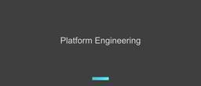

APC 技術ブログ
https://techblog.ap-com.co.jp/
株式会社エーピーコミュニケーションズの技術ブログです。
フィード

【OCI】Oracle Cloud Infrastructure 2025 Networking Professional 合格記
APC 技術ブログ
はじめに こんにちは、クラウド事業部の藤江です。 Oracle Cloud Infrastructure 2025 Networking Professionalに合格することが出来ました。 2回不合格となりましたが何とか3回目の受験で合格することが出来ました。 試験概要 主にネットワークに関する知識を問う試験です。OCIのネットワークサービスの設計、構築、運用に関する知識が必要です。下記のサイトに試験の概要が記載されています。こちらを参照してください。 Exam 1Z0-1124-25: Oracle Cloud Infrastructure 2025 Networking Professi…
1日前

Zscaler ACE Day 参加レポート
APC 技術ブログ
今年も Zscaler ACE Day に参加してきました。 Zscaler ACE Dayは、ZscalerのテクニカルチャンピオンであるACEメンバー、およびACE候補者向けに開催される特別なイベントです。製品アップデートだけではなく、Zscalerが今どのような市場変化を見ているのか、パートナーにどのような役割を期待しているのか、そして私たちがどのようにお客様へ価値を届けていくべきなのかを深く学べる場でもあります。 今回のイベントで最も印象に残ったのは、新機能の紹介そのものではありませんでした。 それ以上に強く感じたのは、AI革命によって、これまで当たり前だと思っていたサイバーセキュリテ…
2日前
【SRE NEXT 2026と2025】NOCブースへの敬意を込めて、その魅力を紹介する 1
1
APC 技術ブログ
SRE NEXT 2026と2025の参加レポート。会場ネットワークを支える「NOCブース」の魅力と監視技術を紹介します。トラブルへ迅速に対応し、Day1からDay2へと進化する運用の舞台裏をファン目線で語ります。
3日前

Microsoft公式のAgenticAI時代のプラットフォームエンジニアリングフレームワーク「git-ape」入門
APC 技術ブログ
git-apeって何？ セットアップ オンボーディング スケジュールドリフト検知機能を有効化するかどうか？ ポリシーチェック時に参考にするレベルはどれか？ ポリシーチェックに引っかかった際にどのように動作するべきか？ 実際に作らせてみる：Container Appsのデプロイ 良いと感じたところ プロンプトで指示を出した内容の構成を、デプロイが正常に完了するまで一気通貫でエージェントが実装してくれる 実際のデプロイを行う前にチェックを行う仕組みがあるのは便利 気になったこと サンプルリソースのデプロイだけではコードなどは払い出されなかった オンボーディングの途中などで、スクリプトを払い出して対…
4日前

FY26 Zscaler Partner Top Sales Tour 2026 参加レポート【第2部/最終回】
APC 技術ブログ
AIエージェントは新しい「利用者」になる 前回の第1部では、「FY26 Zscaler Partner Top Sales Tour」で紹介された内容から、Zero Trustの歴史や基本原則、そして企業に求められるセキュリティが「製品を導入した状態」から「統制内容を説明できる状態」へ変化していることを整理しました。 シリーズ最終回となる第2部では、Zscalerの上原さんからご説明いただいた、AIエージェントに対するZero Trustについて紹介します。あわせて、製造業で想定される活用例や、お客様との会話で確認したいポイントまで整理します。 上原さんのセッションでは、AIエージェント自身の…
4日前

【Backstage】 New Frontend System導入ガイド （Part3「Catalog Overview/Tabへの追加」）
APC 技術ブログ
はじめに 皆さんこんにちは。エーピーコミュニケーションズ ACS事業部 亀崎です。 第1回、第2回と回を重ね、今回はBackstage New Frontend System導入ガイドの第3回になります。 techblog.ap-com.co.jp techblog.ap-com.co.jp 今回やっとNew Frontend Systemで導入が簡単になったよ、ということがご紹介できると思います。 ある意味New Frontend Systemのコアな部分が今回のテーマです。 これまでCatalogのOverviewやTabに新しい機能を導入する際には、PluginをInstallしたあとR…
7日前
FY26 Zscaler Partner Top Sales Tour 2026 参加レポート【第1部】
APC 技術ブログ
AI時代のZero Trustは次のステージへ 今年も、Zscalerがパートナー企業を対象に開催する「FY26 Zscaler Partner Top Sales Tour」に参加しました。 今回の開催地は前回に引き続き沖縄で実施されました。 セッションでは、Zscalerの最新動向だけでなく、Zero Trustの歴史や基本原則、企業に求められるセキュリティ統制、AIエージェント時代に向けた新しいセキュリティの考え方まで、幅広いテーマが取り上げられました。 今回、Zero Trustの本質や企業に求められる統制については、Zscalerの三輪さんからご説明いただきました。 Zero Tru…
8日前

【Zscaler】ZIA経由でFTPS通信を行う方法
APC 技術ブログ
今回は以下のケースを参考に、Zscaler Internet Access(以下、ZIA)経由でFTPS通信を行う際の設定方法をご紹介します。
11日前
【さくらのクラウド】安否確認システムでPIIマスキングのすり抜けとトレースによる更新追跡を検証した
APC 技術ブログ
さくらのクラウド「モニタリングスイート」とsacloud-otel-collectorを用い、構造化PII（電話番号等）の正規表現マスキングを検証。表記ゆれによるすり抜けや誤マスクのリスクを示し、トレースとログ相関による安否確認更新の事後追跡検証をまとめています。
12日前
【Backstage】 New Frontend System導入ガイド （Part2「サイドメニューの設定」）
APC 技術ブログ
はじめに 皆さんこんにちは。エーピーコミュニケーションズ ACS事業部 亀崎です。 前回に引き続き、BackstageのNew Frontend System導入ガイドになります。 techblog.ap-com.co.jp 今回のテーマは「サイドメニュー」。サイドメニューというのは様々な情報の入口でもあり、「この部分は常時表示させたい」や「順序はこうしたい」といった思い入れも出てくるところになります。 そうしたサイドメニューはどのように設定できるのかを今回はご紹介しています。 New Frontend Systemにおける サイドメニューの設定 いろいろ簡単になったよ、というご紹介をする予定…
12日前
【OCI】Multicloud Architect Professional合格記
APC 技術ブログ
目次 目次 はじめに 資格の概要 受験の目的 受験前のスペック 試験の詳細 概要 範囲 合格へのルート 学習教材 学習サイクル 工夫した点 試験のポイント 受験してみた感想 さいごに おわりに はじめに こんにちは、エーピーコミュニケーションズの松尾です。 Oracle Cloud Infrastracture（OCI）の認定試験であるMulticloud Architect Professionalを受験して合格したので学習内容を紹介したいと思います。受験を検討中の方の参考になれば幸いです。 資格の概要 OCIとAzure、Google Cloudのパブリッククラウドとの接続や構成について問…
15日前
「AI & Data - Agentic Hack ~Foundry IQ × Fabric IQ Challenge~」開催レポート
APC 技術ブログ
はじめに こんにちは、iTOC事業部GDAI部-Lakehouseの林です。 株式会社エーピーコミュニケーションズ(以下、APC)は、2026年6月29日(月)、日本マイクロソフト株式会社と共催で「AI & Data - Agentic Hack ~Foundry IQ × Fabric IQ Challenge~」を開催しました。今回はコーチ兼レポーターとして、イベント当日の様子をお届けします！ 本イベントは、2026年3月に開催した「AI & Data – Agentic Hack」に続く第2弾です。前回は多くのご好評をいただいたことを受け、今回は「Microsoft Build 2026…
16日前
【Backstage】 New Frontend System導入ガイド （Part1「SSOの設定」）
APC 技術ブログ
はじめに 皆さんこんにちは。エーピーコミュニケーションズ ACS事業部 亀崎です。 早いもので2026年も半分を過ぎました。2026年のBackstageに関する大きなニュースの１つとして「New Frontend System（NFS）」が挙げられるのではないでしょうか。 techblog.ap-com.co.jp いままで課題であった「コードを書く」という部分がかなり削減されるらしいぞ、簡単になるらしいぞ、というのはわかるのですが、いざ実際にやろうとすると、 「この部分はどうなるんだろうか？」「どのように指定すればいいのだろうか？」といったところが出てきます。 そうした点があって、なかなか…
16日前
Dependabotのグルーピング機能は本当に「銀の弾丸」なのか？実証してみた
APC 技術ブログ
こんにちは。エーピーコミュニケーションズ ACS事業部の福井です。 前回の記事でDependabotの週次運用について書いた流れで、ふと気になっていたことがありました。 「そもそも、グループ化機能を使えば102件のアラームを本当に1本のPRに集約できるのか？」という純粋な疑問です。 試してみました。結果から先に言うと、できました。 102件のアラームが1本のPRに集約され、マージしたらすべて消えるのを確認できました。 ただ、そこに至るまでにGitHubの仕様の罠にいくつかハマりました。 そして「1本にまとめ切ること」がゴールなのか、改めて考えさせられることにもなりました。 その試行錯誤の記録を…
17日前
【AWS】AWS Summit Japan 2026 で JAWS-UG コミュニティブースを担当して初心を思い出した話
APC 技術ブログ
AWS Summit Japan 2026でJAWS-UGのコミュニティブースを担当し、来場者と交流した体験をまとめました。UG Tシャツ、ネットワーキング、Community Leaders Summit参加を通じて、AWSコミュニティの価値と初心を改めて感じた参加レポートです。
18日前
【さくらのクラウド】避難者名簿管理システムでOpenTelemetryのトレース分離とPII対策を検証した
APC 技術ブログ
さくらのクラウド「モニタリングスイート」を自作の避難者名簿管理システム（FastAPI+PostgreSQL）を題材に実機検証。OpenTelemetryによるゼロコード自動計装でスパンが2重に記録される既知の挙動（SQLAlchemy＋psycopg2）への対策や、自由記述ログ本文・属性クエリにおける個人情報（PII）の漏えい対策、Collector側での許可リスト方式（keep_keys）によるマスキングの有効性と限界の個人的見解をまとめています。
19日前
【Zscaler】OneAPI×AnsibleによるZIA運用自動化デモ
APC 技術ブログ
Zscaler公式のAnsibleコレクション「zscaler.ziacloud」を用いたZIA運用自動化デモの検証レビュー。OneAPI連携による設定変更のメリットや運用のしやすさを解説しつつ、検証で判明したリアルな注意点も紹介します。
19日前
AWS Summit Japan 2026初参加レポート
APC 技術ブログ
はじめに こんにちは、クラウド事業部の伊藤です。 先日、AWS Summit Japan 2026に初めて参加してきたので、参加レポートをお届けします！ はじめに AWS Summitは会場に着く前から始まっている AWS Summitでやったこと AWS認定 SWAG セッション サイバーエージェントにおける AI 推進戦略と変革への取り組み EXPO AWS シリコン、AWS Outpostsラック 来年の参加に向けて 朝早く行く セッションを予約しすぎない 綺麗な写真を沢山取る 足を鍛える 終わりに AWS Summitは会場に着く前から始まっている 基調講演が10時開始なので、9時過ぎ…
20日前
【AWS Summit Japan 2026】AWS Graviton5、AWS Outpostsラックの実物が展示されていました。
APC 技術ブログ
こんにちはクラウド事業部の田島です。 先日、AWS Summit Japan 2026に参加してきたので、訪れたブースについて紹介したいと思います。 AWS Graviton5、AWS Outpostsラックについて AWS Graviton5とは？ 一言でいうと、Graviton5はAWSが開発したプロセッサで、AWSで使用するケースに最適化されています。 aws.amazon.com AWS Outpostsとは？ 一言でいうと、自社のデータセンターにAWSのラックを設置でき、AWSに接続できてサーバーとしても使えるサービスです。 aws.amazon.com AWS Graviton5と…
21日前
【AWS】AWS Summit Japan 2026 現地参加レポート：来年参加する方に伝えたい入場・持ち物・会場の歩き方
APC 技術ブログ
AWS Summit Japan 2026に現地参加して分かった、入場時の混雑、NFCバッジ、金属探知機チェック、基調講演の並び方、持ち物、服装、靴、ノベルティ、雨対策をまとめました。来年参加する方に向けた実践的な参加ガイドです。
21日前
【AWS Summit Japan 2026】 AI Agentが経営する店に行ってみた
APC 技術ブログ
こんにちは、クラウド事業部の田島です。 AWS Summit Japan のLiving Mart というブースに行ってきました。 このブースでは6体のAI Agentが自律して店舗を経営する展示がありました。 各エージェントには「Claude」のモデルが使用されており、それぞれ以下のような役割を担っていました。 役職/ロール 担当 業務内容・説明 CEO 経営担当 KPIを見て方針を決め、各エージェントに戦略を投げる。経営判断の中枢 Ops 運営担当 商品企画・発注・在庫・価格設定・売り上げ分析・日々のオペレーション PR 広報担当 ECサイトを自分で編集してデプロイ。販促・導線改善 Con…
22日前
Splunk Enterprise 9.4 構築手順書：Oracle Linux 9環境（OCI）での導入と夜間停止・容量不足対策
APC 技術ブログ
Splunk Enterprise 9.4をOracle Linux 9で動かす爆速構築手順を解説！OCI（Oracle Cloud）の「Standard3.Flex」を採用し、夜間停止運用と「容量不足（Out of Capacity）」による起動失敗を回避する実戦的なインフラノウハウとお財布に優しい課金停止対策まで網羅。
23日前
【Zscaler】HTTP Header Profile で実現する、きめ細かなURLフィルタリング
APC 技術ブログ
ZscalerのHTTP Header Profileについて解説しています。
25日前
【GitHub】Organization のロールと権限を見直したハナシ
APC 技術ブログ
はじめに こんにちは、ACS事業部の田中（@shuhey1220）です。 管理を担当している Organization でセキュリティ担当者に Security Manager の権限を付与するにあたり、Organization のロールと権限について見直しました。 詳しい仕様は公式ドキュメントに載っていますが、一事例として書き留めておきます。 Security Manager の概要 Security Manager は、Organization レベルで定義できる管理ロールです。 このロールを付与されたユーザーは以下の操作を行えます。 すべてのリポジトリのセキュリティアラート閲覧・管理 O…
25日前
Microsoft Fabric を AI に任せて触ってみた（改訂版）
APC 技術ブログ
こんにちは。ACS事業部の越川です。 謝辞 Fabric を初めて触る方へ プロンプト駆動とはどういうことか Microsoft Fabric とは何か ① Lakehouse: データを集める置き場 ② Shortcut: コピーせずにつなぐ ③ Warehouse: 分析しやすい形に整える ④ Semantic Model: 意味を与える ⑤ Power BI レポート: 見せる AI に任せて触ってみて分かったこと 補足: Fabric を操作するスキルとは何か まとめ 自分の手で試したい方へ（ハンズオン教材） ※掲載終了 参考リンク 注記 ACS 事業部のご紹介 先日 Microsof…
25日前
ハイブリッドワーク時代で実現する安全な生成AIの利用～in Interop Tokyo 2026～
APC 技術ブログ
１．はじめに ２．Interopと今年のテーマとは ３．「クラウド型セキュリティによる生成AIの安全な利用統制」技術 3.1．ゼロトラスト時代におけるハイブリッドワークの通信ネットワーク 3.2．どこでも快適に、安全に「KDDIが実現するネットワーク構成」 【オフィスからの通信（インターネットブレイクアウトの実現）】 【テレワーク（自宅など）からの通信（強固な暗号化とオフロード）】 3.3．生成AIアプリケーションへの安全なアクセス制御 3.4．利用者にとってのメリット ４．まとめおよび感想 メンターからのひとこと １．はじめに はじめまして。2026年度新卒で入社いたしました組織能力開発部の…
1ヶ月前
FabricをAIに任せて、AIコストの正体を測ってみた
APC 技術ブログ
こんにちは。ACS事業部の越川です。 やったこと: GitHub Copilot CLI に Fabric 操作を任せて測る 計測結果: lab別の消費 遅いモデルとの付き合い方 一番の難所で起きたこと 軽量モデルは、難所でツールを使いこなせなかった 見えてきたこと: コストは「使う人」と「使い方」で決まる おまけ: スキルは「呼ばれた時だけ」コストになる まとめ 注記 ACS 事業部のご紹介 GitHub Copilot が2026年6月から従量課金（AI Credits）へ移行しました。社内でも「実際どれくらいクレジットを使うのか」「使用量をどう可視化するか」が話題になっています。気になる…
1ヶ月前
【Interop 2026】「IPsec HA」が実現する高速冗長化の仕組み
APC 技術ブログ
■ はじめに 初めまして！2026年度新卒で入社いたしました。組織能力開発部の高江洲です。 今回、ありがたいことに幕張メッセで開催された「Interop Tokyo 2026」に参加させていただきました。数々の最先端技術に触れる中で、特に私が興味を惹かれた トピックについて、 学びと自身の共有も兼ねてブログを書かせていただきます。 ※本記事は、Interop Tokyo 2026のセッションを現地で視聴したエンジニアが、できる限り客観的にその内容や感想を共有することを目的に作成いたしました。 技術に関してもブログに関しても、まだまだ未熟な点が多々ありますが、温かい目でお読みいただけますと幸いで…
1ヶ月前
ShowNet「水冷」を新卒が視る！
APC 技術ブログ
はじめに こんにちは、2026年度新卒で入社いたしました組織能力開発部の柴田です。 本記事は、インターネットテクノロジーのイベントである「Interop Tokyo 2026」への参加レポートです。 展示内容の中で特に興味深かった「水冷技術」について、 私個人の視点から感じたことや学んだことを共有させていただきます。 ※本記事の内容は、イベントでの展示や説明に基づいた私個人の考察・感想であり、 所属する組織の公式な見解や推奨を代表するものではありません。(執筆時点2026年6月) 技術面・執筆面ともに未熟な点も多くございますが、温かく見守っていただけると嬉しいです。 はじめに 選定した理由 水…
1ヶ月前
「通信は電気」から「すべてを光へ」 【Interop Tokyo 2026参加レポート】
APC 技術ブログ
※本記事では、Interop Tokyo 2026の参加レポートとIOWN構想について注目したポイントを、内容をできる限り客観的に共有することを目的に作成しました。また、生成AIを活用し添削などを行っています。 はじめまして、2026年度新卒で入社いたしました組織能力開発部の林 楓馬（はやし ふうま）です。 先日、幕張メッセで開催された「Interop Tokyo 2026」に参加してきました！ 本記事では、その中で特に興味深かった技術や、私が感じた学びについてご紹介します。 至らない点もあるかと存じますが、皆様のご参考になれば幸いです。 Interop Tokyo 2026の感想 NTTが提…
1ヶ月前